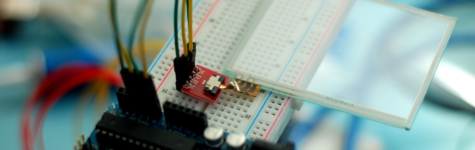

Get Touchy - Nintendo DS Touch Screen + Arduino

It seems like touch screens are plastered on every consumer electronic device from your phone to your refrigerator. And why not right? Well, even though those beautiful multitouch hi-res screens are a little pricy and crazy hard to develop with, doesn't mean we cant still add a touch panel to our project. The touch panel from the Nintendo DS provides a very simple, inexpensive solution to allow us to do just that.
The Nintendo DS panel is a resistive panel making it very easy to hook it up to our Arduino, but it only recognizes a single input at a time and is a little imprecise.
Hooking It Up
If you are going to use this, I highly recommend using the breakout board with it because it is a little hard soldering directly to the ribbon cable. If you are using the breakout board: The ribbon from the panel it too thin to be used with the breakout board, and it will just fall out (weird I know). To fix this I stuck 2 layers of scotch tape over the back and cut off the excess with an x-acto blade - just make sure not to cut the ribbon. The brown plastic part of the breakout-board connector pulls out so you can slide the ribbon in it (pins side up). Once you have the ribbon in, and aligned nicely, make sure to slide the connector close to lock it into place.
Now that the panel is connected to the breakout, just note... the panel is actually now upside down (again... weird). I just flipped the panel over and to right so the ribbon was just bent at a 45º angle, but you can do whatever works best for you.
If you are wondering where the +/GND & resistors are... don't worry about it. Just connect the 4 pins into the Arduino as shown and you are ready for the code. This really is how it goes, it gets power and ground from the pins based on how the code works.
{kind=link}
Code
This code may look a little funky at first, so just hold on. If you didn't know, the analog pins can be used as digital pins if needed and can be written to. The pins we are using need to act as digital pins at points and analog pins at others. Some people refer to the analog pins as pins 14-19 when using them as digital pins, and the Arduino will understand that. But that always confused the crud out of me when I was new to this so I will be referring to them as A0, A1, A2 & A3 because it does the same thing, and is much less confusing. Also, on the Arduino Mega, there is a digital pin 14, making things even weirder, so this takes that into consideration as well.
If you are still confused:
If you tell your arduino to do an analogRead on pin 0, it knows to read from analog pin 0. If you tell the arduino to do a digitalWrite on pin 0 it uses digital 0. We need to do a digitalWrite on analog 0, then an analogRead on analog 0 as well. So if we just said 0 for both, the Arduino would be confused and write to the digital 0 then read from analog 0. So we are saying A0 so it knows that whether we are reading or writing to that pin, we mean analog 0.
This code will just output the coordinates in the serial terminal when you touch it. The top left should be 0,0 and should move to about 800,770 in the bottom right. I shouldn't output anything when it is not being touched.
If it does not respond when you touch the panel, try the other side, it is a little hard to tell just by looking at it, what the sensitive side is. If you tried both sides and it still does not respond, try repositioning the ribbon cable in the connector and try again.
int y1 = A0; int x2 = A1; int y2 = A2; int x1 = A3; void setup() { Serial.begin(9600); } int readX(){ pinMode(y1, INPUT); pinMode(x2, OUTPUT); pinMode(y2, INPUT); pinMode(x1, OUTPUT); digitalWrite(x2, LOW); digitalWrite(x1, HIGH); delay(5); //pause to allow lines to power up return analogRead(y1); } int readY(){ pinMode(y1, OUTPUT); pinMode(x2, INPUT); pinMode(y2, OUTPUT); pinMode(x1, INPUT); digitalWrite(y1, LOW); digitalWrite(y2, HIGH); delay(5); //pause to allow lines to power up return analogRead(x2); } void loop() { int x = readX(); int y = readY(); if(x < 1000 & y < 1000){ Serial.print("x: "); Serial.print(x-100); Serial.print(" - y: "); Serial.println(y- 130); } delay(100); //just to slow this down so it is earier to read in the terminal - Remove if wanted }
Article taken from bildr.org with minor changes - I am the original author of this content